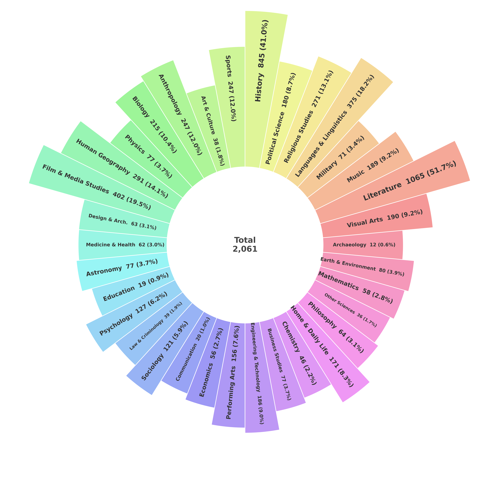
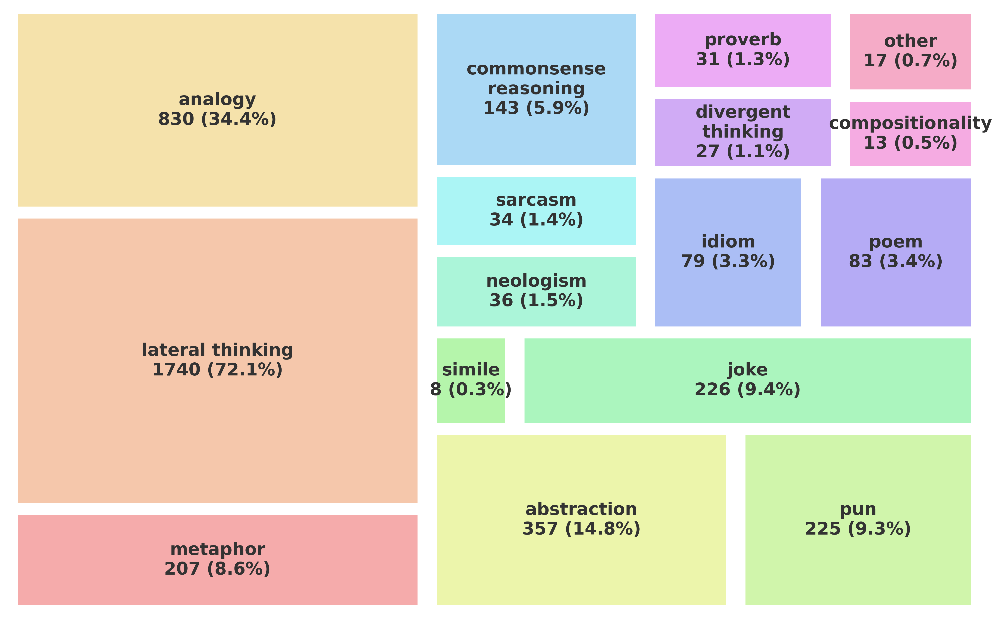
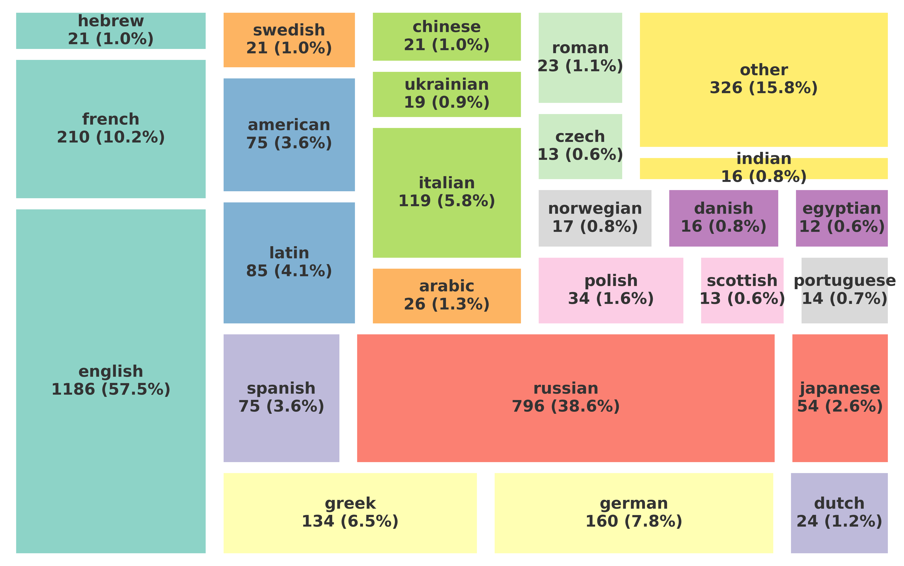

CresOWLve: Benchmarking Creative Problem-Solving Over Real-World Knowledge

Abstract
Creative problem-solving requires combining multiple cognitive abilities, including logical reasoning, lateral thinking, analogy-making, and commonsense knowledge, to discover insights that connect seemingly unrelated pieces of information. However, most existing benchmarks for large language models (LLMs) evaluate only specific components of this process. Moreover, many creativity-oriented benchmarks rely on artificially constructed brainteasers or contrived scenarios that do not reflect how creative problem-solving occurs in real-world settings. To address this gap, we introduce CresOWLve, a benchmark for evaluating creative problem-solving using puzzles grounded in real-world knowledge. Problems in CresOWLve require employing multiple creative thinking strategies, retrieving facts from diverse domains, and creatively combining them to arrive at a solution. Evaluating several frontier non-thinking and thinking LLMs, we show that CresOWLve remains highly challenging. Our analysis reveals a consistent performance gap: models perform substantially better on factual questions than on creative ones (up to -17% drop). While models can often retrieve the relevant knowledge, they struggle to form the non-obvious creative connections required to integrate the knowledge and arrive at the correct answer
Leaderboard
We evaluate several frontier open-weight and proprietary LLMs varying in their size and reasoning mode, on our benchmark and demonstrate that, despite recent advances, the benchmark remains highly challenging, revealing substantial gaps in model performance on creative reasoning over real-world knowledge.
Note: The following are the performance results on the English version.
| Model Family | Model Version | Thinking Model | Thinking Effort | Exact Match | LLM Judge Accuracy |
|---|
Knowledge Domains
CresOWLve questions require models to retrieve and creatively integrate knowledge from a wide range of domains, including science, history, culture, art, and more.

Creative Language & Thinking
CresOWLve questions also require models to employ a wide range of creative thinking strategies, such as lateral thinking, analogy-making, and commonsense reasoning, to creatively combine the retrieved knowledge and arrive at the correct answer. Additionally, the questions are about several creative domains, such as poetry, metaphor and humor.

Cultures & Demographics
CresOWLve questions are also grounded in knowledge about entities and people from different cultures and demographics.

Examples
CresOWLve contains questions varying in their difficulty from Very Easy to Very Hard.
Citation
@misc{ismayilzada2026cresowlve,
title={CresOWLve: Benchmarking Creative Problem-Solving Over Real-World Knowledge},
author={Mete Ismayilzada and Renqing Cuomao and Daniil Yurshevich and Anna Sotnikova and Lonneke van der Plas and Antoine Bosselut},
year={2026},
eprint={2604.03374},
archivePrefix={arXiv},
primaryClass={cs.CL},
url={https://arxiv.org/abs/2604.03374},
}